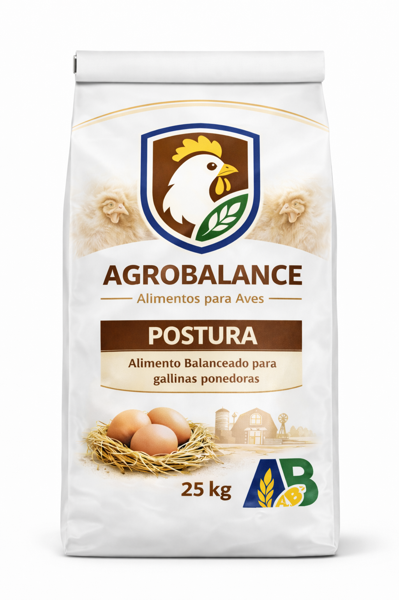

SUPERMIX Aves
Descripción
SUPERMIX Aves es un balanceado premium formulado especialmente para maximizar la producción y salud de aves de postura y engorde. Desarrollado con ingredientes de alta calidad y bajo estrictos controles de calidad, garantiza un óptimo desarrollo, conversión alimenticia y producción de huevos.
Nuestro balanceado contiene la combinación perfecta de proteínas, energía, vitaminas y minerales que las aves necesitan en cada etapa de su ciclo productivo.
Recomendaciones
- Proporcionar agua limpia y fresca en todo momento
- Almacenar en lugar fresco y seco, protegido de la humedad
- Suministrar en comederos limpios y en buenas condiciones
- Realizar transición gradual de 7 a 10 días al cambiar de alimento
- Consultar con un técnico veterinario para ajustes específicos según la genética
- Mantener las instalaciones limpias y bien ventiladas
Consumo Recomendado
Pollitas (0-6 semanas):
40-60 g/día
Recría (7-18 semanas):
60-90 g/día
Postura (18+ semanas):
100-120 g/día
Engorde (0-8 semanas):
Libre acceso
Ingredientes
Maíz molido, torta de soja, afrechillo de trigo, carbonato de calcio, fosfato dicálcico, sal común, premezcla vitamínica-mineral, metionina, lisina, aceite vegetal, antioxidantes, antifúngicos permitidos.
Análisis Nutricional Garantizado:
Proteína Bruta:
16-18%
Energía Metabolizable:
2.800 kcal/kg
Calcio:
3.5-4.0%
Fósforo disponible:
0.4-0.5%
